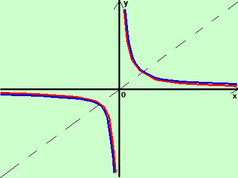

|
sviluppo Data la seguente funzione determinatene, se possibile, la funzione inversa indicandone anche le eventuali restrizioni nel dominio
La funzione non e' definita per il valore x=0 per cui si annulla il denominatore  E' l'iperbole equilatera Anche questa funzione corrisponde alla sua inversa: infatti se cambio x con y ottengo sempre la stessa equazione scambio tra loro x ed y
xy = 1 esplicito la y
il dominio e' dato da tutto ℜ eccetto il punto 0 in cui il denominatore si annulla D = {x ∈ ℜ / x ≠ 0 } |